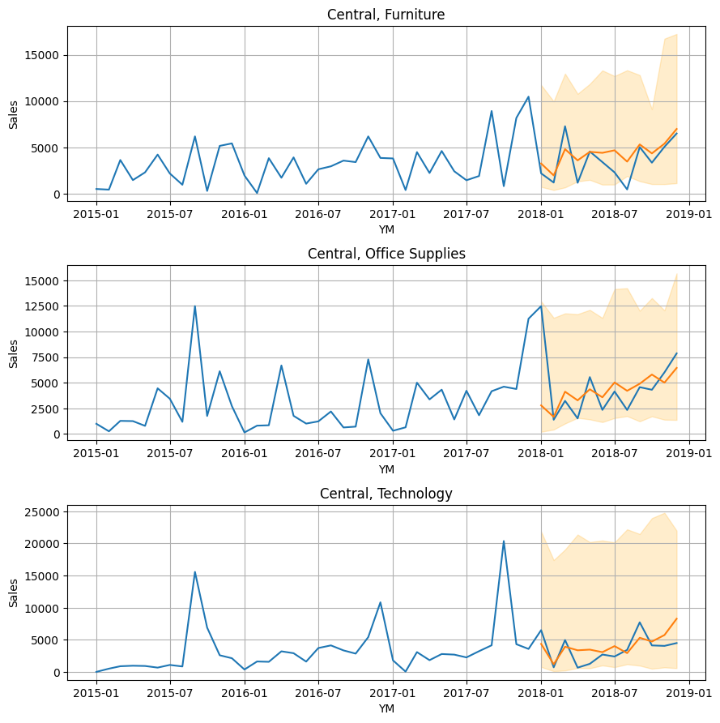

Modeling with Exogenous Features
In this example, we will use a stores sales dataset to perform a global (multi-series) forecast. The dataset represents sales for different store region and product category combinations from a single store chain over time. There are 12 different time series, each with a different combo of region and category (e.g. East Region Furniture Sales or West Region Technology Sales). A global forecasting model trains on all time series simultaneously. Global models can draw parallels across all time series, whereas the single-series models are siloed to only one. For example, in this case, a global model will be able to understand shared trends between all different product categories in a single region. Similarly, it will also understand shared trends across all regions for a single product category. We will walk through data preparation, then show creation of both recursive and direct forecast models.
Data Preparation
We will start by joining some exogenous data onto the same sales dataset that was used in the Global Forecasting example. The exogenous dataset contains two new features, both macroeconomic indicators in the US: Unemployment Rate and Consumer Price Index (CPI).
# imports
from clustercast.datasets import load_store_sales
from clustercast import DirectForecaster, RecursiveForecaster
# load store sales data
sales_data = load_store_sales()
# join the exogenous data onto the store sales data
data = pd.merge(left=sales_data, right=exog_data, how='left', on='YM')
print(data)
# keep only certain data for training
data_train = data.loc[
data['YM'] < dt.datetime(year=2018, month=1, day=1)
]
ID YM Region Category Sales Unemployment Rate CPI
0 1 2015-01-01 Central Furniture 506.358 5.7 1.947530
1 1 2015-02-01 Central Furniture 439.310 5.5 1.954495
2 1 2015-03-01 Central Furniture 3639.290 5.4 2.433336
3 1 2015-04-01 Central Furniture 1468.218 5.4 2.962651
4 1 2015-05-01 Central Furniture 2304.382 5.6 2.501291
.. .. ... ... ... ... ... ...
568 12 2018-08-01 West Technology 6230.788 3.8 2.296711
569 12 2018-09-01 West Technology 5045.440 3.7 2.333723
570 12 2018-10-01 West Technology 4651.807 3.8 2.606263
571 12 2018-11-01 West Technology 7584.580 3.8 3.723764
572 12 2018-12-01 West Technology 8064.524 3.9 2.911777
[573 rows x 7 columns]
We will display only the first 3 time series (of the 12 total) for brevity.
# display the first 3 time series
fig, ax = plt.subplots(3, 1, figsize=(9, 9))
ax = np.ravel(ax)
for i in range(3):
ts_known = data.loc[data['ID'] == i + 1]
sns.lineplot(data=ts_known, x='YM', y='Sales', ax=ax[i])
ax[i].grid(axis='both')
ax[i].set_title(f'{ts_pred['Region'].iloc[0]}, {ts_pred['Category'].iloc[0]}')
fig.tight_layout(pad=1)

Direct Forecaster
Now, let's create a direct forecaster. We will use similar model parameters to those in the Global Forecasting example. This time, we will also include Unemployment Rate and CPI as exogenous features when we instantiate the model. For a direct forecaster, that is the only thing you need to do for modeling exogenous features!
# create the forecasting model
model = DirectForecaster(
data=data_train,
endog_var='Sales',
id_var='ID',
group_vars=['Region', 'Category'],
exog_vars=['Unemployment Rate', 'CPI'], # include exog features
timestep_var='YM',
lags=12,
seasonality_ordinal=[12],
)
# fit the model
model.fit(max_steps=12, alpha=0.10, cqr_cal_size='auto')
# make predictions
direct_preds = model.predict(steps=12)
print(direct_preds)
ID YM Region Category Forecast Forecast_0.050 Forecast_0.950
0 1 2018-01-01 Central Furniture 3263.294564 732.286329 11748.444901
1 2 2018-01-01 Central Office Supplies 2794.477492 208.984567 12961.443208
2 3 2018-01-01 Central Technology 4380.098196 797.547269 21857.918680
3 4 2018-01-01 East Furniture 3729.807853 1296.053621 9192.842472
4 5 2018-01-01 East Office Supplies 4218.281820 2291.741176 11076.653250
.. .. ... ... ... ... ... ...
139 8 2018-12-01 South Office Supplies 5887.928413 1277.627392 5035.407014
140 9 2018-12-01 South Technology 4424.659682 898.589906 10710.782462
141 10 2018-12-01 West Furniture 9069.307202 1818.777556 14607.406334
142 11 2018-12-01 West Office Supplies 8040.104658 1916.935088 15490.695424
143 12 2018-12-01 West Technology 7740.399938 1768.470532 18257.377666
[144 rows x 7 columns]
# display the first 3 time series forecasts
fig, ax = plt.subplots(3, 1, figsize=(9, 9))
ax = np.ravel(ax)
for i in range(3):
ts_known = data.loc[data['ID'] == i + 1]
ts_pred = direct_preds.loc[direct_preds['ID'] == i + 1]
sns.lineplot(data=ts_known, x='YM', y='Sales', ax=ax[i])
sns.lineplot(data=ts_pred, x='YM', y='Forecast', ax=ax[i])
ax[i].grid(axis='both')
ax[i].fill_between(x=ts_pred['YM'], y1=ts_pred.iloc[:, -2], y2=ts_pred.iloc[:, -1], alpha=0.2, color='orange')
ax[i].set_title(f'{ts_pred['Region'].iloc[0]}, {ts_pred['Category'].iloc[0]}')
fig.tight_layout(pad=1)

Recursive Forecaster
For recursive forecasting models, you need to also pass future values of the exogenous variables to the prediction method. These future values may either be forecasted themselves or they may be known a-priori (e.g. what-if scenario modeling, or factors that are controlled by you). The reason that future values must be passed to the predict method is because recursive models only predict one step ahead, then feed those new predictions as inputs for the prediction for the next step ahead. The recursive model only makes predictions for the endogenous variable (not the exogenous ones) so they must be passed to the predict method.
We will start by preparing the exogenous dataframe that will be passed to the predict method. This dataframe must have the following columns:
- The timestep
- The series ID
- The exogenous variable values for the corresponding timestep and series ID
Because we joined the Unemployment Rate and CPI data to the original store sales dataset, we can just isolate the relevant columns from that dataframe.
# get the exogenous feature values out to the end of the forecast horizon
future_exog = data[['ID', 'YM', 'Unemployment Rate', 'CPI']].copy()
print(future_exog)
ID YM Unemployment Rate CPI
0 1 2015-01-01 5.7 1.947530
1 1 2015-02-01 5.5 1.954495
2 1 2015-03-01 5.4 2.433336
3 1 2015-04-01 5.4 2.962651
4 1 2015-05-01 5.6 2.501291
.. .. ... ... ...
568 12 2018-08-01 3.8 2.296711
569 12 2018-09-01 3.7 2.333723
570 12 2018-10-01 3.8 2.606263
571 12 2018-11-01 3.8 3.723764
572 12 2018-12-01 3.9 2.911777
[573 rows x 4 columns]
Now, let's create a recursive forecaster model. We will use the same parameters as we did with the direct forecaster. Notice that the future exogenous data is passed to the predict method, also.
# create the forecasting model
model = RecursiveForecaster(
data=data_train,
endog_var='Sales',
id_var='ID',
group_vars=['Region', 'Category'],
exog_vars=['Unemployment Rate', 'CPI'], # include exog features
timestep_var='YM',
lags=12,
seasonality_ordinal=[12],
)
# fit the model
model.fit(alpha=0.10)
# make predictions, and include the exogenous feature data
recursive_preds = model.predict(steps=12, exog_data=future_exog)
print(recursive_preds)
ID YM Region Category Forecast Forecast_0.050 Forecast_0.950
0 1 2018-01-01 Central Furniture 3263.294564 2003.807769 4761.098893
1 2 2018-01-01 Central Office Supplies 2794.477492 1313.254393 6970.375753
2 3 2018-01-01 Central Technology 4380.098196 3115.703771 9829.714225
3 4 2018-01-01 East Furniture 3729.807853 2191.461063 9860.048448
4 5 2018-01-01 East Office Supplies 4218.281820 2928.411646 7529.262034
.. .. ... ... ... ... ... ...
139 8 2018-12-01 South Office Supplies 5018.833178 3994.733445 9392.034780
140 9 2018-12-01 South Technology 3888.920668 2769.218325 12022.306172
141 10 2018-12-01 West Furniture 7410.047095 6238.034085 10714.565368
142 11 2018-12-01 West Office Supplies 7315.177064 5588.471151 8328.289858
143 12 2018-12-01 West Technology 7628.612253 6616.717556 10676.775578
[144 rows x 7 columns]
# display the first 3 time series forecasts
fig, ax = plt.subplots(3, 1, figsize=(9, 9))
ax = np.ravel(ax)
for i in range(3):
ts_known = data.loc[data['ID'] == i + 1]
ts_pred = recursive_preds.loc[recursive_preds['ID'] == i + 1]
sns.lineplot(data=ts_known, x='YM', y='Sales', ax=ax[i])
sns.lineplot(data=ts_pred, x='YM', y='Forecast', ax=ax[i])
ax[i].grid(axis='both')
ax[i].fill_between(x=ts_pred['YM'], y1=ts_pred.iloc[:, -2], y2=ts_pred.iloc[:, -1], alpha=0.2, color='orange')
ax[i].set_title(f'{ts_pred['Region'].iloc[0]}, {ts_pred['Category'].iloc[0]}')
fig.tight_layout(pad=1)